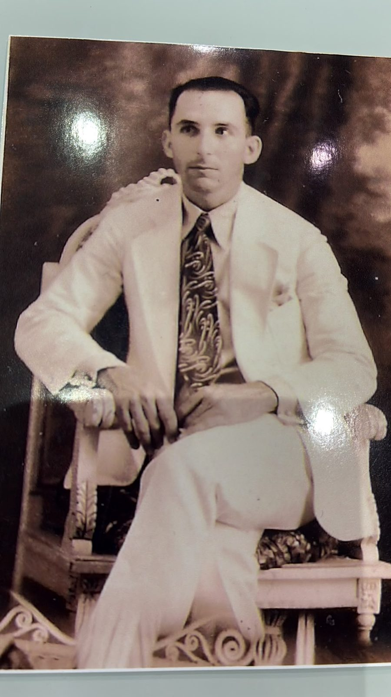

«De oro, un árbol de sinople, frutado de oro, y un leopardo de su color natural, pasante al pie del tronco.»
Armas de los Naranjo, según Los Naranjos
Árbol genealógico
Los Naranjo de Telde, documentados en Gran Canaria desde el siglo XVII. En el XIX varios hermanos Naranjo Cabrera cruzaron el Atlántico hacia Venezuela y Cuba, y una de sus ramas echó raíces en Pinar del Río.
Pulse sobre un nombre para abrir su ficha, con documentos, fotos y recortes de prensa. Las líneas unen a cada pareja con sus hijos.

Félix Naranjo Cabrera18432 Rosalía Rodríguez ValdésCuba Adrián Salvador Naranjo Rodríguez1877 Agustín Benito Naranjo Rodríguez1875 - h. 1950-55 Quirina Úrsula Fernández FernándezSan Luis (Cuba)
Natalio Naranjo Rodríguez1878
Quirina Úrsula Fernández FernándezSan Luis (Cuba)
Natalio Naranjo Rodríguez1878
 Juana Naranjo Fernández1908-2012
Felicita Naranjo Fernández
Inocencia «Nina» Naranjo Fernández1915-2010
Hugo Ángel Fernández Arada1913 - h. 1984-89
Félix Naranjo Fernándezh. 1904-19052
José Naranjo Fernández1914-1989
Cinco hijos1942-1955 · personas vivas
Juana Naranjo Fernández1908-2012
Felicita Naranjo Fernández
Inocencia «Nina» Naranjo Fernández1915-2010
Hugo Ángel Fernández Arada1913 - h. 1984-89
Félix Naranjo Fernándezh. 1904-19052
José Naranjo Fernández1914-1989
Cinco hijos1942-1955 · personas vivas
Las generaciones más antiguas proceden del árbol de Cristo Santana Naranjo en Geneanet, basado en el libro Historia de los Naranjo en Canarias de Miguel Rodríguez Díaz de Quintana. Solo se publican datos de personas fallecidas.
Las rutas de la familia
El árbol sigue abierto: ver pendientes y viajes.